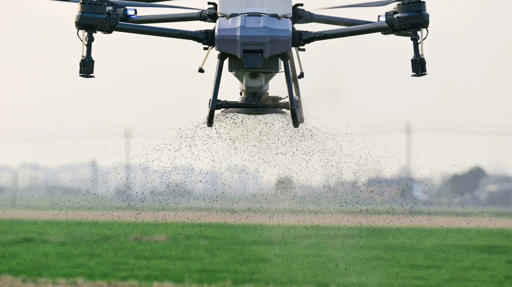
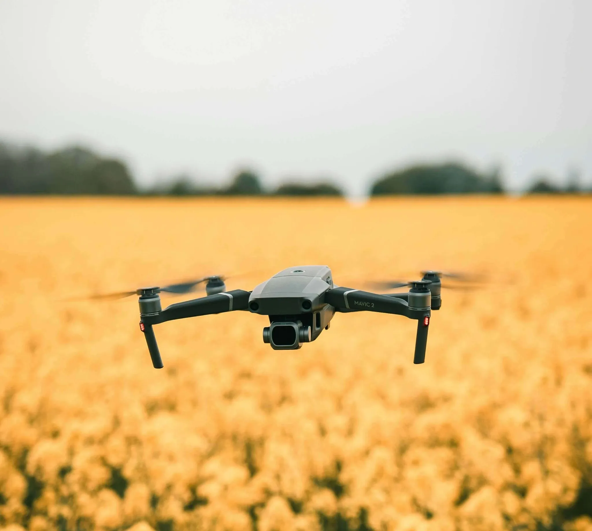

Fumigación Aérea
Aplicación precisa y eficiente de agroquímicos, herbicidas o fungicidas con drones, reduciendo el desperdicio de insumos y evitando el pisoteo del cultivo.

Siembra Aérea
Ideal para cobertura verde, reforestación o cultivos de cobertura. Rápida, homogénea y sin compactar el suelo.

Monitoreo de Cultivos
Captura de imágenes aéreas con sensores que permiten detectar deficiencias, estrés hídrico o plagas. Permite tomar decisiones más rápidas y precisas.
Mapeo y Relevamiento
Mapas topográficos en 2D y 3D para planificar riego, drenaje y obras en el campo. Fundamental para una agricultura de precisión.